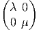
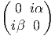
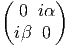

∈ C0(M), défini, pour tout caractère x ∈ M de A
par
∈ C0(M), défini, pour tout caractère x ∈ M de A
par
Lorsqu’on se donne un “espace” M (techniquement, un ensemble dont les éléments sont surnommés “points”), on sait construire l’algèbre des fonctions sur M à valeurs réelles ou complexes. Cette algèbre est commutative puisque multiplication et addition sont définies ponctuellement comme suit : (fg)[x] = f[x]g[x] = g[x]f[x] = (gf)[x] et (f + g)[x] = f[x] + g[x] = g[x] + f[x] = (g + f)[x]. Lorsque notre espace M est équipé d’une structure topologique, on sait construire l’algèbre C0(M) des fonctions continues et lorsque M est équipé d’une structure différentiable, on sait construire l’algèbre C∞(M) des fonctions différentiables.
Il est possible de complètement inverser cette démarche : en d’autres termes, il est possible de partir d’une algèbre A commutative, abstraitement définie, et de fabriquer une espace M, tel que A s’identifie avec l’algèbre des fonctions sur M. Nous allons maintenant préciser cette construction.
On se donne A une algèbre de Banach, c’est à dire une algèbre associative sur ℂ, munie d’une norme || qui soit telle que ||fg||≤||f||||g|| et telle que l’espace vectoriel sous-jacent soit un espace de Banach (un espace vectoriel normé complet).
On appelle caractère de A tout homomorphisme non nul de A vers le corps ℂ des complexes. L’ensemble des caractères M s’appelle le spectre de A.
On suppose maintenant l’algèbre A commutative. On appelle transformation
de Gelfand l’application ℱ de A dans l’algèbre commutative C0(M) qui
à f ∈A associe ∈ C0(M), défini, pour tout caractère x ∈ M de A
par

Résultat (sans démonstration) : ℱ est un homomorphisme d’algèbre de Banach commutative.
Encore quelques définitions :
Une algèbre de Banach involutive est une algèbre de Banach munie d’une étoile c’est à dire une involution (f∗∗ = f), anti-linéaire (λf)∗ = λf∗ (pour λ ∈ ℂ) et anti-multiplicative ((fg)∗ = g∗f∗), telle que l’étoile soit isométrique ||f∗|| = ||f||.
Une C - étoile algèbre, est une algèbre de Banach involutive telle que, ∀f ∈A ||f∗f|| = ||f∗||||f|| = ||f||2
Théorème de Gelfand (sans démonstration) : Lorsque A est une C-étoile algèbre commutative, la transformation de Gelfand entre A et l’algèbre C0(M) des fonctions continues sur le spectre de A est un isomorphisme.
En fait, on peut préciser davantage : lorsque A est une C-étoile algèbre commutative unitale (c’est à dire avec unité), l’espace M est compact. D’une certaine façon, rajouter une unité à une algèbre qui n’en a pas revient à compactifier (via Alexandrov) son spectre.
Ce qui ressort de cette discussion, c’est le fait que s’intéresser à un espace (un ensemble de points) ou s’intéresser à une algèbre commutative sont deux activités grosso modo essentiellement équivalentes. En langage savant, on dit que la transformation de Gelfand ℱ permet de définir un foncteur réalisant une équivalence entre la catégorie des espaces topologiques (compacts) et celle des ℂ∗ algèbres commutatives (unitales).
Une algèbre non commutative ne peut pas être considérée comme une algèbre de fonctions (à valeurs réelles ou complexes) sur un espace, puisque l’algèbre serait alors commutative. La “géométrie non commutative”, au sens le plus large du terme, consiste souvent à re-écrire les diverses propriétés géométriques des “espaces” dans le langage des algèbres commutatives, c’est à dire sans utiliser la notion de point, puis à effacer, partout où cela est possible, le mot “‘commutatif”. Ce faisant, on invente alors une nouvelle géométrie, celle des algèbres non commutatives. Les espaces non commutatifs n’existent donc pas, mais les algèbres qui les définissent, elles, existent bel et bien.
Du point de vue de la physique, il est pratique (et d’usage courant !) de
décrire notre environnement à l’aide de points (pensez à la tête du voyageur à qui
on dirait “Voyez-vous ce caractère de la C-étoile algèbre C0(S2) ?” au lieu de
“Voyez-vous ce point à la surface de la Terre ?”). Cela dit, les deux points de vue
sont équivalents, et on passe d’un point de vue à l’autre à l’aide de la superbe
formule  (x) = x(f) sur laquelle il est bon de méditer…A ce sujet, nous invitons le
lecteur à relire le paragraphe de l’Introduction intitulé “Du classique au
quantique”.
(x) = x(f) sur laquelle il est bon de méditer…A ce sujet, nous invitons le
lecteur à relire le paragraphe de l’Introduction intitulé “Du classique au
quantique”.
Dans le cadre commutatif, étant donné une variété M, nous avons décrit, de façon détaillée, une algèbre différentielle graduée, en l’occurence, celle, notée Λ(M) des formes différentielles : le “complexe de De Rham”. Cette algèbre est différentielle (puisque munie d’une différentielle d) et différentielle graduée puisque d envoie Λp(M) dans Λp+1(M). De plus, elle est telle que Λ0(M) = C∞(M). Comme nous le verrons un peu plus bas, le lecteur devrait se garder de croire qu’il s’agit là de la seule possibilité.
Dans le cadre non commutatif, nous supposons donnée une algèbre associative A, unitale pour simplifier, mais non nécessairement commutative. A va remplacer, dans la construction, l’algèbre commutative C∞(M), c’est à dire, “philosophiquement”, l’espace M lui-même. On veut pouvoir associer à A une algèbre différentielle graduée Ω, qui coïncide avec A en degré zéro. Les éléments de Ω vont remplacer les formes différentielles usuelles. On pourrait dire que ce sont des formes différentielles quantiques .
Nous cherchons à fabriquer une algèbre différentielle graduée qui, en degré zéro, coïncide avec A. En fait, il existe de nombreuses possibilités, chaque possibilité définit ce qu’on appelle un calcul différentiel sur l’algèbre A. Cependant, une de ces possibilités est plus générale que les autres, en un sens que nous allons préciser. C’est celle qu’on désigne sous le nom d’algèbre ΩA des formes universelles.
Soit A une algèbre associative unitale. On veut construire une algèbre différentielle ℤ-graduée (ΩA,δ) qui soit “la plus générale possible”, et qui soit telle que ΩA0 = A. Etre “la plus générale possible” signifie que tout autre algèbre du même type pourra s’obtenir à partir de celle-ci en imposant des relations supplémentaires. Techniquement, cela revient à dire que si (Ξ,d) est une autre algèbre différentielle ℤ-graduée, avec Ξ0 = A, alors, c’est qu’il existe un morphisme α (morphisme d’algèbre différentielle graduée) de ΩA sur Ξ tel que l’algèbre (Ξ,d) apparaisse comme un quotient de l’algèbre des formes universelles (ΩA,δ) :

On part de A. Désignons les éléments de A par des symboles ap. On introduit alors de nouveaux symboles qu’on va désigner par δap. Attention, pour l’instant, δ n’est pas (encore) un opérateur : le symbole δap doit être pris comme un tout : c’est une copie de l’élément ap. L’espace vectoriel engendré par les symboles δap est simplement une copie de l’espace vectoriel A. Ensuite, on fabrique des mots, en concaténant librement des éléments de A (donc des ap) et des éléments du type δaq. Ainsi a0δa1a2a3δa4δa5a6 est un mot. On décide alors d’additionner et de multiplier librement ces mots de façon à ce que la structure obtenue soit une algèbre. Jusque là, on n’obtient rien de très palpitant : juste une algèbre “libre” engendrée par des symboles. Pour finir, on va imposer des relations : celles de A, tout d’abord, mais surtout, les deux suivantes (pour tout a,b dans A) :


On pourrait, bien entendu, formaliser la construction ci-dessus, en terme d’idéaux et de relations, mais, le résultat est, somme toute, très simple : on part des éléments a de A et on introduit des différentielles δa (attention, ce ne sont pas des éléments de A) de façon à ce que la règle de Leibniz (la règle de dérivation d’un produit) soit vérifiée.
Les règles ci-dessus permettent de re-écrire n’importe quel élément de ΩA sous la forme d’une combinaison linéaire de termes du type a0δa1δa2…δap où tous les ai sont des éléments de A et où le seul élément qui n’est pas différentié (a0) se situe à gauche. En effet, par exemple

Le fait que l’algèbre différentielle ΩA soit universelle vient du fait que, dans sa construction, nous n’avons rien imposé d’autre que la règle de Leibniz ainsi que les relations algébriques déjà présentes dans A. Tout autre algèbre différentielle construite sur A contiendra donc automatiquement des relations supplémentaires. Soit (Ξ,d) une autre algèbre différentielle, également associée à A, on sait qu’il doit alors exister un morphisme α de ΩA dans Ξ, ce morphisme est simplement défini sur les éléments de base, par α(a0δa1δa2…δap) = a0da1da2…dap et étendu par linéarité sur toute l’algèbre Ξ.
La construction précédente est simple et, en principe suffisante. Cela dit, il est agréable de pouvoir considérer δa comme un objet construit concrètement “à partir” de a et non comme un symbole abstrait. Voici donc une seconde construction de l’algèbre des formes universelles qui répond à ce souci.
Soit m : A⊗A A, l’opérateur de multiplication m(a ⊗ b) = ab.
A, l’opérateur de multiplication m(a ⊗ b) = ab.
Posons Ω0A = A On décide de noter (prenons a et b dans A) :
Soit Ω1A l’espace vectoriel engendré par les éléments de A A du type aδb.
Notons que aδb appartient au noyau de l’opérateur de multiplication
m(aδb) = ab − ab1 l = 0. Plus généralement, il est évident que les éléments de
Ker(m) sont des combinaisons linéaires d’éléments de ce type. En d’autres
termes, on a
A du type aδb.
Notons que aδb appartient au noyau de l’opérateur de multiplication
m(aδb) = ab − ab1 l = 0. Plus généralement, il est évident que les éléments de
Ker(m) sont des combinaisons linéaires d’éléments de ce type. En d’autres
termes, on a

On pose alors


Soit M une variété différentiable, ou même, un ensemble absolument quelconque. On peut alors construire l’algèbre commutative des fonctions sur M (bien entendu, lorsque M est un espace topologique, ou une variété différentielle, on peut choisir les fonctions continues, les fonctions différentiables etc). Notons encore A cette algèbre, sans préciser davantage. La construction de ΩA reste valable, puisque nous n’avons rien eu a supposer d’autre que l’associativité de l’algèbre A. Considérons l’élément
Remarque : lorsque M est discret, il est d’usage d’identifier, comme nous venons de le faire, l’algèbre des fonctions Fun(M × M… × M) du produit cartésien de l’espace M par lui-même avec l’algèbre produit tensoriel Fun(M) ⊗ Fun(M) ⊗…Fun(M). Lorsque M est un espace topologique (en particulier une variété), on n’a, en général, qu’une inclusion stricte de Fun(M) ⊗ Fun(M) ⊗…Fun(M) dans Fun(M × M… × M), et il faudrait tenir compte de la topologie utilisée pour pouvoir préciser davantage. Nous ne tiendrons pas compte de cette subtilité topologique dans ce qui suit.
Considérons maintenant un élément de Ω2A :
 = a (x)b(y )c(z) − a(x)b(x)c(z) − a(x)b(y)c(y) + a(x)b(x)c(y)
= a (x)[b(y) − b(x)][c(z) − c(y)]](source892x.png)
Cet élément peut donc s’interpréter comme une fonction de trois variables, qui s’annule lorsque x = y ou lorsque y = z (mais pas lorsque x = z).
Plus généralement, les élements de ΩpA peuvent être considérés comme des fonctions de p + 1 variables qui s’annulent lorsque deux arguments successifs sont égaux.
On voit que δb désigne bien ici la différence discrète b(y) − b(x). Lorsque M est une variété différentiable, on peut faire tendre y vers x et obtenir ainsi la forme différentielle usuelle db(x) = ∂b _ ∂xμdxμ. La théorie générale s’applique évidemment dans ce cas particulier : ΩpC∞(M) est une algèbre différentielle universelle mais il existe par ailleurs une algèbre de formes différentielles (ΛM,d) que nous connaissons bien (le complexe de De Rham), il existe donc un morphisme α de la première algèbre sur la seconde. Ce morphisme envoie a0δa1δa2… (dans le cas présent a0(x)(a1(y) − a1(x))(a2(z) − a2(y))…) sur la forme différentielle a0da1 ∧ da2….
Notons que le noyau de ce morphisme est très gros. D’une part, on sait que lorsque p > dim(M), ΛpM = 0, alors que ΩpC∞(M) n’est jamais nul (quel que soit p). Par ailleurs, même si p ≤ dim(M) il est facile de trouver des éléments de ΩC∞(M) qui s’envoient sur zéro : par exemple, l’élément aδ(bc) − abδc − caδb n’est certainement pas nul dans Ω1C∞(M), alors que ad(bc) −abdc−cadb est nul dans Λ1M.
L’exemple qui nous venons de considérer montre bien que cette algèbre différentielle de De Rham, dont nous avons l’habitude, est loin d’être la seule possible, même dans le cadre commutatif, lorsqu’on veut définir un calcul différentiel. L’inconvénient de l’algèbre des formes universelles, c’est qu’elle est généralement très (trop) “grosse” et peu maniable. Cependant, il est des cas, même commutatifs, où l’algèbre de De Rham n’est pas utilisable — par exemple lorsque M n’est pas différentiable — et il est bien pratique de pouvoir faire appel à la dernière construction. Un autre cas interessant est celui d’une variété M qui n’est pas connexe : on peut alors, bien sûr, faire du calcul différentiel “à la De Rham” sur chaque composante connexe, mais, ce faisant, on perd de l’information, car les formes universelles non nulles du type aδb[x,y] où x et y appartiennent à deux composantes connexes distinctes n’ont aucune correspondance dans l’algèbre de De Rham. Pour illustrer ce phénomène, qui se trouve posséder une interprétation physique aussi bien inattendue que capitale, nous allons choisir l’exemple d’un espace non connexe extrêmement simple : celui fourni par la donnée de deux points. Dans ce cas, les 1-formes usuelles (celles de De Rham) n’existent pas. Par contre, on va pouvoir construire et utiliser l’algèbre des formes universelles Ω = Ω(ℂ ⊕ ℂ).
Considérons donc un ensemble discret {L,R} constitué de deux éléments que nous désignons par les lettres L et R (penser a Left et Right). Soit x la fonction coordonnée x(L) = 1,x(R) = 0 et y la fonction coordonnée y(L) = 0,y(R) = 1. Remarque : xy = yx = 0, x2 = x,y2 = y and x + y = 1 l où 1 l est la fonction unité 1l(L) = 1, 1 l(R) = 1. Un élément quelconque de cette algèbre associative (et commutative) A engendrée par x et y peut s’écrire λx + μy (où λ et μ sont deux nombres complexes) et peut être représenté par une matrice diagonale  . On peut écrire A = ℂx ⊕ ℂy. L’algèbre est donc isomorphe à ℂ ⊕ ℂ. Nous introduisons maintenant deux symboles δx,δy, ainsi qu’une différentielle δ qui satisfait à δ2 = 0, qui doit satisfaire à δ1 l = 0 et à la règle habituelle de dérivation d’un produit (règle de Leibniz). Il est évident que Ω1, l’espace des différentielles de degré 1 est engendré par les deux quantités indépendantes xδx and yδy. En effet, la relation x + y = 1 l implique δx + δy = 0 ; de plus, les relations x2 = x and y2 = y impliquent (δx)x + x(δx) = (δx), donc (δx)x = (1 l − x)δx and (δy)y = (1 l − y)δy. Ceci implique également, par exemple, δx = 1 lδx = xδx + yδx, xδx = −xδy, yδx = (1 l − x)δx, (δx)x = yδx = −yδy etc . Plus généralement, désignons par Ωp, l’espace des différentielles de degré p ; les relations ci-dessus montrent qu’une base de cet espace vectoriel est fourni par les éléments {xδxδx…δx,yδyδy…δy}. Posons Ω0 = A et Ω = ⊕ pΩp. L’espace Ω est une algèbre : on peut multiplier les formes librement, mais il faut tenir compte de la règle de Leibniz, par exemple x(δx)x(δx) = x(1 l −x)(δx)2. Attention : l’algèbre Ω est de dimension infinie, comme il se doit puisque p parcourt toutes les valeurs de 0 à l’infini. Bien entendu, la différentielle δ obéit à la règle de Leibniz lorsqu’elle agit sur les éléments de A mais elle obéit à la règle de Leibniz graduée lorsqu’elle agit sur les éléments de Ω, en l’occurence δ(ω1ω2) = δ(ω1)ω2 + (−1)∂ω1ω 1δ(ω2) où ∂ω1 désigne 0 ou 1 suivant que ω1 est pair ou impair.
Dans le cas particulier de la géométrie d’un ensemble à deux points, {L,R} nous retrouvons le fait qu’un élément A de Ω1 considéré comme fonction de deux variables doit obéir aux contraintes A(L,L) = A(R,R) = 0 et peut donc être écrit comme une matrice 2 × 2 indexée par L et R dont les éléments non diagonaux sont nuls (“matrice hors diagonale”). Un élement F de Ω2 peut être considéré comme fonction de trois variables obéissant aux contraintes F(L,L,R) = F(R,R,L) = F(L,R,R) = F(R,L,L) = F(R,R,R) = F(L,L,L) = 0. Les deux seules composantes non nulles sont donc F(L,R,L) and F(R,L,R). Le fait que dim(Ωp) = 2 pour tout p suggère la possibilité d’utiliser des matrices de taille fixe (en l’occurence des matrices 2 × 2) pour toutes valeurs de p. Ceci ne serait pas le cas pour une géométrie à plus de deux points. En effet, on peut aisément généraliser la construction précédente, par exemple en partant de trois points au lieu de deux. Mais dans ce cas, Ω1 est de dimension 6 et Ω2 de dimension 12. Avec q points, la dimension de Ωp est q(q − 1)p. Ce dernier résultat vient du fait que dim(A⊗A) − dim(Ker(m)) = dim(A). On a donc dim(Ω1) = q2 − q.
Pour revenir au cas de la géométrie à deux points, nous voyons qu’il est
possible de représenter λx(δx)2p + μy(δy)2p comme une matrice diagonale  et l’élément αx(δx)2p+1 + βy(δy)2p+1 comme la matrice “hors” diagonale
 Autrement dit nous pouvons représenter les formes paires par des
matrices paires (i.e. diagonales) et les formes impaires par des matrices impaires
(i.e. “hors” diagonales) ; ceci est non seulement naturel mais obligatoire si on
veut que la multiplication des matrices soit compatible avec la multiplication dans
Ω. En effet, les relations
et l’élément αx(δx)2p+1 + βy(δy)2p+1 comme la matrice “hors” diagonale
 Autrement dit nous pouvons représenter les formes paires par des
matrices paires (i.e. diagonales) et les formes impaires par des matrices impaires
(i.e. “hors” diagonales) ; ceci est non seulement naturel mais obligatoire si on
veut que la multiplication des matrices soit compatible avec la multiplication dans
Ω. En effet, les relations

Nous verrons un peu plus loin qu’il est possible, en géométrie non commutative, de donner un sens à la notion de connexion. Dans le cas le plus simple, la forme de connexion A n’est autre qu’une forme de degré 1 appartenant à une algèbre différentielle (Ξ,δ) associée à l’algèbre associative A choisie. On verra que la courbure F, dans ce cas, peut également s’écrire comme F = δA + A2.
Dans le cas présent, Ξ = Ω. Une forme de degré 1 est un élément de Ω1. Prenons A = (φxδx + yδy). La représentation matricielle de A se lit donc


Notre calcul différentiel, dans le cas présent, est commutatif, puisque l’algèbre des fonctions sur un espace à deux points est simplement l’algèbre des matrices diagonales 2 × 2 avec des coefficients complexes (ou réels) mais notre calcul différentiel est, en un sens, “non local” puisque la “distance” entre les deux points étiquetés par L et R ne peut pas tendre vers zéro…Le lecteur aura sans doute remarqué que ces résultats peuvent s’interpréter en termes de champs de Higgs. Nous y reviendrons (exemple poursuivi en 6.2.4).
Rappelons (relire 1.10.1) que
Classiquement, une forme différentielle ω est une n-forme sur l’algèbre de Lie des champs de vecteurs, antisymétrique, linéaire par rapport aux scalaires, bien sûr, mais aussi linéaire par rapport aux fonctions, et à valeur dans les fonctions.
On va définir ici les formes différentielles comme des objets qui soient des n-formes sur l’algèbre de Lie des dérivations de A, antisymétrique, linéaire par rapport au scalaires, bien sur, mais aussi linéaire par rapport au centre Z(A) de A et à valeurs dans l’algèbre A.
En d’autres termes, on pose
Cette définition est due à [6]
C’est une algèbre différentielle graduée avec un produit défini par

En particulier, pour une 1-forme da (agissant sur la dérivation v) on a simplement

On peut immédiatement vérifier que d est alors une dérivation graduée de degré 1 sur l’algèbre ΩDer(A) et que d2 = 0.
Les définitions qui précèdent sont tout à fait naturelles puisque ce sont exactement les mêmes que pour les différentielles habituelles (rappelons encore une fois que, dans le cas usuel de la géométrie ”commutative”, les dérivations d’algèbres vk de l’algèbre A = C∞(M) ne sont autres que les champs de vecteurs).
En utilisant la règle de Leibniz, on voit qu’un produit quelconque d’éléments de a et de différentielles (du type da) peut se réordonner sous la forme d’une somme de termes du type a0da1…dan. Cela dit, il y a une petite subtilité : avec la définition que nous avons adoptée, il n’est pas clair que tout élément de ΩDerA puisse s’écrire comme une somme finie d’éléments de ce type. Ceci conduit à introduire la définition suivante : on pose ΩDerA = ⊕ n=0∞Ω DernA où Ω DernA est le sous-espace vectoriel de Ω DernA constitué des sommes finies du type a0da1…dan. On démontre alors [6] que ΩDerA est la plus petite sous algèbre différentielle graduée de ΩDerA contenant A.
En général, on peut oublier cette distinction entre ΩDer et ΩDer. Dans le cas de la géométrie des variétés (variétés connexes ou réunion dénombrables de variétés connexes), on peut démontrer que les deux notions coïncident lorsque la variété M est paracompacte. Cela qui revient à dire que la variété admet une base topogique dénombrable…(et dans ce cas elle admet également un atlas comprenant au plus une infinité dénombrable de cartes). Pour des variétés paracompactes, donc (hypothèse qu’on fait presque toujours !), les deux notions coïncident et coïncident évidemment avec l’algèbre des formes différentielles usuelles (ceci découlant immédiatement de l’identité entre les définitions ci-dessus et celles qu’on peut trouver en 1.6.2). Lorsque l’algèbre A n’est pas commutative, on aura également les deux possibilites : ΩDerA et ΩDerA qui peuvent coïncider ou non. Le cas le moins “sauvage” est évidemment celui où les deux notions coïncident (analogue non commutatif du cas paracompact). Dans la suite de cette section, on supposera que c’est le cas.

Remarque : il existe des algèbres très simples qui n’admettent pas de dérivations…par exemple l’algèbre des nombres complexes ! Dans ce cas, la construction qu’on vient d’exposer ne donne rien (bien que l’algèbre des formes universelles soit néanmoins non triviale).
Soient A et ℬ deux algèbres associatives (commutatives ou non). Il est certain que l’algèbre des formes universelles pour l’algèbre A⊗ℬ n’est pas isomorphe au produit tensoriel gradué des algèbres universelles de A et ℬ séparément.

Supposons maintenant que qu’on s’intéresse à une variété non connexe obtenue comme réunion (disjointe) de plusieurs copies (deux pour simplifier) d’une même variété connexe M. On se retrouve donc dans la situation précédente avec A = C∞(M) et ℬ = ℂ ⊕ ℂ. En effet A⊗ℬ = C∞(M) ⊕ C∞(M). L’algèbre différentielle Ω(C∞(M)) ⊗ Ω(ℂ ⊕ ℂ) est encore peu commode à utiliser (on se souvient que les éléments de Ω(C∞(M)) sont des fonctions de plusieurs variables qui s’annulent lorsque deux arguments successifs sont égaux). Par contre, rien ne nous interdit de remplacer cette dernière par l’algèbres des formes différentielles usuelles ΛM. On obtient ainsi le diagramme suivant, où chaque flèche désigne un morphisme surjectif d’algèbres différentielles graduées :
L’algèbre


On pourrait ici continuer notre exemple des connexions sur ℂ ⊕ ℂ, en choisissant cette fois-ci pour forme de connexion un élement quelconque de Ξ1. La norme carré de la courbure s’interprète alors physiquement comme le lagrangien d’un modèle de jauge U(1) × U(1), avec potentiel de Higgs et symmétrie brisée. Un des deux champs de jauge devient massif (le boson Z0) et l’autre reste sans masse (le photon).
La construction qui suit est un peu plus élaborée que les précédentes, en ce sens qu’elle utilise un plus grand nombre d’ingrédients. On a vu que la construction de l’algèbre des formes différentielle universelle Ω(A) était possible, pour une algèbre associative quelconque A. L’algèbre différentielle ΩDer(A), quant à elle, fait jouer un rôle particulier aux dérivations de A (pour autand qu’elles existent). L’algèbre différentielle que nous allons présenter maintenant, et dont la construction est due à A. Connes, repose sur la donnée d’un “triplet spectral”, donnée qui englobe, non seulement l’algèbre associative A elle-même, mais également d’autres données qui peuvent être considérées comme le codage d’une structure riemannienne non commutative. Certains rappels et/ou constructions annexes sont nécessaires.
Dans l’approche traditionnelle de la géométrie différentielle, on commence par se donner un espace M (on peut alors parler de l’algèbre des fonctions sur M), on le munit tout d’abord d’une topologie (on peut alors parler de l’algèbre C0(M) des fonctions continues sur M), puis d’une structure différentiable (ce qui revient à choisir une sous-algèbre particulière C∞(M) incluse dans dans C0(M)), puis d’une structure riemannienne (choix d’une métrique), puis d’une structure spinorielle (si la variété le permet), on construit alors le fibré des spineurs, puis l’opérateur de Dirac relatif à la métrique choisie et agissant sur les champs de spineurs (sections du fibré des spineurs). Dans le cas d’une variété compacte et d’une métrique proprement riemannienne, on peut alors fabriquer un produit scalaire global et un espace de spineurs (l’espace L2 des champs de spineurs de carré intégrable). Dans le cas où la variété est de dimension paire, on peut également décomposer cet espace de Hilbert en deux sous-espaces supplémentaires correspondant à des demi-spineurs de chiralités opposées, l’opérateur de Dirac allant d’un sous-espace à l’autre (on rappelle que cet opérateur anti-commute avec l’opérateur de chiralité).
Tout ceci est maintenant bien connu du lecteur (voir chapitres précédents). L’approche “à la A. Connes” [3] de la géométrie non commutative consiste à “renverser la vapeur” en écrivant tout ceci à l’envers, et sous forme algébrique (en utilisant des algèbres commutatives), puis de promouvoir l’essentiel de ces transcriptions au rang de définitions, en effaçant l’adjectif “commutatif”.
La théorie se divise alors en deux : il existe un cas dit “pair” et un cas dit “impair”. Nous allons simplement ébaucher la discussion du cas pair, cas qui généralise au cas non commutatif la géométrie associée à la donnée d’un opérateur de Dirac sur une variété de dimension paire. On se donne un triplet (A,ℋ,D) possédant les propriétés suivantes : ℋ est un espace de Hilbert ℤ2 gradué (l’opérateur de graduation est alors appelé opérateur de chiralité), A est une algèbre associative munie d’une involution (∗) et représentée fidèlement dans ℋà l’aide d’opérateurs bornés pairs, et D est un opérateur auto-adjoint tel que les commutateurs [D,a],a ∈A soient bornés ; on impose également à la résolvente (D + i)−1 d’être un opérateur compact.
Un tel triplet est appelé triplet spectral mais on pourrait peut-être, de façon plus imagée, le désigner sous le nom d’espace riemannien quantique. Dans le cas de la géométrie commutative, A coïnciderait avec la complexifiée de l’algèbre C∞(M), ℋ avec l’espace de Hilbert L2(S) des champs de spineurs de carré intégrable, et D avec l’opérateur de Dirac lui-même.
Dans le cas classique (commutatif), si on n’impose pas de propriété de compacité pour la résolvente de D, l’algèbre A (qui est telle que les commutateurs de ses éléments avec D soient bornés) n’est autre que l’algèbre des fonctions Lipschitziennes sur M, c’est à dire celle dont les éléments sont tels que |f(x) − f(y)|≤ cd(x,y),∀x,y ∈ M.
Dans ce cadre commutatif, il se trouve qu’il est en fait possible de retrouver la distance riemannienne d(x,y) entre deux points quelconques x et y de M à partir de ces données. En effet, on montre que
![d (x, y) = Sup {|f (x) − f(y)|,f ∈ A, |[D, f]| ≤ 1}](source911x.png)
Nous avons maintenant tout ce qu’il nous faut pour construire l’algèbre différentielle ΩD(A). Nous savons déjà construire l’algèbre des formes universelles Ω(A). Soit ω = a0δa1δa2…δan, une n-forme universelle (un élément de Ωn(A)). Nous lui associons l’opérateur borné
Nous n’irons pas plus avant dans cette direction. Le lecteur interessé pourra consulter une litérature plus spécialisée. Cela dit, il est peut-être important de signaler ici que les constructions mathématiques présentées dans cette section — et même dans le présent chapitre — sont souvent récentes, ce qui signifie que les définitions et constructions proposées n’ont peut être pas encore suffisemment bénéficié du mûrissement nécessaire. Cela ne signifie pas qu’elles sont erronées mais elles n’ont peut être pas atteint le même degré de stabilité temporelle que les autres concepts présentés auparavant dans cet ouvrage.
En vertu de la dualité existant entre un espace M et l’algèbre commutative C(M) des fonctions sur cet espace (la correspondance précise a été donnée plus haut), on peut essayer de re-écrire toutes les mathématiques traitant des propriétés des “espaces” dans le langage purement algébrique de la théorie des algèbres commutatives. On peut essayer, également, de re-exprimer tous ces concepts d’une façon qui ne fasse pas explicitement appel à la commutativité de l’algèbre. Bien entendu, ce n’est pas toujours possible, mais, lorsque c’est le cas, on peut alors effacer l’adjectif “commutatif” et promouvoir le concept en question au niveau (par exemple) d’une définition, valable pour les algèbres non commutatives, en général. D’une certaine façon, on pourrait voir les mathématiques non commutatives simplement comme une étude des algèbres associatives non commutatives. Un tel point de vue ne correspondrait cependant pas à la démarche psychologique adoptée : c’est en effet la géométrie ordinaire — plus précisemment la notion de point — qui est souvent choisie comme support de notre intuition ; les thèmes qui intéressent la géométrie non commutative sont précisemment les propriétés des algèbres non commutatives qui généralisent les propriétés des espaces “ordinaires”, même si les points n’existent plus. De cette façon, on peut alors construire une théorie de la mesure non commutative, une topologie non commutative, un calcul différentiel pour les algèbres non commutatives (voir supra), une théorie des connexions, des espaces fibrés (non commutatifs) et même une généralisation de la théorie des groupes (la théorie des groupes quantiques). Notre propos n’est pas ici de détailler et d’étudier toutes ces théories, mais simplement d’illustrer les considérations qui précèdent et d’effectuer un tour rapide de ce zoo non commutatif, en espérant que le lecteur aura plaisir à y retourner en consultant la littérature spécialisée. L’ouvrage présent étant essentiellement dédié à l’étude de certains aspects de la géométrie différentielle, nous avons décidé de consacrer néanmoins la section précédente à une étude un peu plus détaillée des notions relatives aux calculs différentiels non commutatifs. Pour le reste, notre étude ne sera guère plus qu’une ébauche.
Nous avons déjà parlé de la transformation de Gelfand établissant une correspondance entre espaces topologiques compacts et C∗-algèbres commutatives unitales (l’existence d’une unité est liée à l’hypothèse de compacité). On voit donc, en enlevant l’adjectif “commutatif” que la topologie non commutative n’est autre que l’étude des C∗-algèbres non commutatives.
Passons à la théorie de la mesure. Classiquement, au lieu de démarrer avec un espace topologique M, on peut partir de l’algèbre C(M) des fonctions continues sur M et définir les mesures (positives) comme les formes linéaires continues (positives) sur l’algèbre C(M), c’est à dire comme des fonctionnelles μ telles que μ[ff] ≥ 0,∀f ∈ C(M). La correspondance avec la notion élémentaire de mesure se fait grâce au théorème de Riesz, c’est à dire en écrivant μ[f] = ∫ Xfdμ. A partir de C(M), nous définissons les mesures ; pour une mesure μ donnéee, nous pouvons fabriquer l’espace de Hilbert ℋ = L2(M,μ) des fonctions de carré intégrable pour cette mesure. C(M) agit dans cet espace de Hilbert ℋ par multiplication : nous avons une représentation π définie par π(f)g = fg, avec f ∈ C(M) et g ∈ℋ. A partir de ℋ, nous pouvons fabriquer l’algèbre L∞(M,μ) des fonctions mesurables essentiellement bornées sur M. Soit ℒ(H) l’algèbre des opérateurs bornés sur ℋ. Rappelons que l’algèbre L∞(M,μ) peut être construite comme le commutant de l’action π de C(M) dans ℒ(H).

Tout ce qu’on vient de rappeler figure — peut être dans un ordre différent — dans un cours standard de théorie de la mesure. Le trait essentiel, dans la présentation qui précède est de ne pas faire intervenir les points de l’espace M. En recopiant tout ceci, mais en effaçant l’adjectif “commutatif”, on peut alors inventer une version non commutative de la théorie de la mesure…Soit dit en passant, les physiciens théoriciens ont inventé la plupart de ces différents concepts, dans le cadre de la mécanique statistique quantique, bien avant qu’ils aient été formalisés par des mathématiciens ! Reprenons donc rapidement ce qui précède, en partant d’une C∗-algèbre non commutative A, remplaçant la donnée de C(M). On définit les états (ce sont précisemment des mesures non commutatives) comme ci-dessus : un état μ est une forme linéaire positive continue sur A, c’est à dire μ ∈A∗ et μ[ff] ≥ 0,∀f ∈A. On peut supposer μ normé : μ[1 l] = 1. On construit alors un espace de Hilbert ℋ en définissant tout d’abord le produit scalaire (f,g) = μ[f∗g] sur l’espace A lui-même (on n’a alors qu’une structure pre-Hilbertienne) puis en fabriquant l’espace de Hilbert correspondant (complété et séparé). Cette construction bien connue porte le nom — en mathématiques non commutatives — de construction GNS (Gelfand-Naimark-Segal). Comme dans le cas commutatif, A agit dans ℋ par multiplication, ce qui fournit une représentation π de A dans l’espace des opérateurs bornés ℒ(H). On considère alors ℳ, le bi -commutant de A dans ℒ(H). Ce bi-commutant est une algèbre de Von Neumann (il est égal à son propre bi-commutant) ; c’est donc l’analogue non commutatif de L∞(M,μ). 1 Rappel : lorsque A est une algèbre d’opérateurs, A, A′ et A′′ sont d’ordinaire différents, mais A′ = A′′′. La dernière étape consiste à étendre la définition de l’état μ à l’algèbre de Von Neumann ℳ tout entière (on a évidemment A⊂ℳ).
La théorie que l’on vient d’ébaucher est à la base de très nombreux développements, aussi bien en mathématiques (théorie des facteurs), qu’en physique (mécanique quantique statistique des systèmes avec nombre fini ou infini de degrés de liberté). Notre but, comme nous l’avions anoncé plus haut, n’était que d’attirer l’attention du lecteur sur le parallèle évident existant entre ces deux théories : théorie de la mesure (en fait mesures de Radon) et théorie des algèbres de Von Neumann ; l’un étant en quelque sorte la généralisation non commutative de l’autre.
Comme on l’a vu en 6.2, étant donné une algèbre associative A, on peut toujours fabriquer une algèbre différentielle ℤ-graduée qui coïncide avec A en degré 0. Le choix d’une telle algèbre différentielle n’est pas, en général, unique : on dit qu’on fait alors le choix d’un calcul différentiel pour l’algèbre A. On peut faire un choix qui soit plus “général” que les autres (formes différentielles universelles). Les différentes algèbres différentielles possibles (les autres calculs différentiels associables à une algèbre associative donnée) sont des quotients de l’algèbre des formes universelles. Nous renvoyons le lecteur à la section précédente pour une analyse plus détaillée de ces différents choix.
En géométrie différentielle ordinaire, un espace fibré principal peut être considéré comme un outil servant à la fabrication de fibrés associés, de la même façon que les groupes eux-mêmes servent à fabriquer des représentations. En géométrie non commutative, on pourrait, bien sur, tenter de généraliser dans un premier temps la structure de groupe elle-même (c’est la théorie des groupes quantiques), puis la structure de fibré principal, et enfin celle de fibré associé. Ces généralisations existent. Cependant la définition et l’étude des groupes quantiques (ou algèbres de Hopf ) nous entrainerait trop loin. Nous préférons donc suivre ici une approche plus directe, qui n’utilise pas cette notion.
Nous partons de la constatation suivante : en géométrie différentielle
ordinaire, l’ensemble ΓE des sections d’un fibré associé E (les champs de
matière de la physique) constitue un module sur l’algèbre C∞(M) des
fonctions sur la base. Par exemple, si x ∈ M V (x) ∈ ΓE est un champ de
tenseurs (ou de spineurs …), et si x ∈ M
V (x) ∈ ΓE est un champ de
tenseurs (ou de spineurs …), et si x ∈ M f(x) ∈ ℝ (ou ℂ) est une fonction,
alors [fV ](x) = f(x)V (x) est aussi un champ de tenseurs (ou de spineurs
etc…).
f(x) ∈ ℝ (ou ℂ) est une fonction,
alors [fV ](x) = f(x)V (x) est aussi un champ de tenseurs (ou de spineurs
etc…).
Ce n’est pas la notion d’espace fibré vectoriel associé que nous allons généraliser, mais celle de l’ensemble de ses sections. Etant donné une algèbre associative A, possiblement non commutative, nous allons donc considérer tout module Γ sur A comme l’analogue non commutatif d’un fibré vectoriel associé. En fait, dans le cas commutatif, les modules obtenus par construction de fibré associé sont d’un type un peu particulier. On dit qu’ils sont projectifs de type fini (théorème de Serre-Swann). Sans rentrer dans les détails, cela signifie la chose suivante. L’ensemble des sections d’un fibré vectoriel trivial dont la fibre type est de dimension n est manifestement isomorphe au module (C∞(M))n. Lorsque le fibré n’est pas trivial, il suffit de se placer dans un espace un peu plus grand (c’est à dire de rajouter un certain nombre de dimensions à la fibre) pour le trivialiser. Le fibré de départ est alors obtenu comme p(C∞(M))n, p désignant un projecteur (p2 = p) de l’algèbre des matrices n × n sur C∞(M).
Dans le cadre non commutatif, on remplacera donc la notion d’“espace des sections d’un fibré vectoriel” (physiquement l’espace des champs de matière d’un certain type) par la notion de module projectif fini sur une algèbre associative A. L’espace vectoriel pAn, p désignant un projecteur, est manifestement un module (à droite) sur A.
Si A n’est pas commutative, il faut évidemment faire la distinction entre les modules à droite et les modules à gauche.
Notons, pour finir, qu’un cas intéressant de module sur A est celui où on choisit un module particulier égal à l’algèbre elle-même opérant sur elle-même par multiplication (c’est l’analogue non commutatif d’un fibré en droites).
Soit Ξ un calcul différentiel sur une algèbre A, c’est à dire une algèbre
différentielle ℤ-graduée, avec Ξ0 = A. Soit ℳ un module à droite sur A. Une
différentielle covariante ∇ sur ℳ est une application ℳ⊗AΞp ℳ⊗
AΞp+1 telle
que
ℳ⊗
AΞp+1 telle
que

Dans le cas particulier où l’on choisit le module ℳ comme l’algèbre A elle-même, toute 1-forme Ξ (tout élément de Ξ1) permet de définir une différentielle covariante : on pose simplement


Choisissons u, un élément inversible de A et agissons avec d sur l’equation u−1u = 1 l. On obtient (utilisant le fait que d1 l = 0) l’equation

Définissons également ω′ = u−1ωu + u−1du et calculons la nouvelle courbure ρ′ = dω′ + ω′2. On obtient immédiatement ρ′ = u−1(dω + ω2)u = u−1ρu où

Remarque : Ici nous avons choisi un module ℳ (un ingrédient nécessaire pour construire n’importe quelle théorie de jauge) égal à l’algèbre A elle-même. Plus généralement, nous aurions pu choisir un module libre An, ou même, un module projectif pAn sur A. Dans ce dernier cas, le formalisme précédent doit être légérement modifié. En effet, le projecteur p va intervenir dans le calcul de la courbure (c’est un peu comme si nous faisions de la géométrie différentielle classique de façon extrinsèque, en plongeant notre espace dans un espace “plus grand”). Comme toujours, la courbure est ρ = ∇∇. La différentielle covariante est


Soit ϕ une (n + 1)-forme linéaire ϕ(a0,a1,…,an) sur l’algèbre A. Alors
 − ϕ(a0,a1a2,a3) + ϕ(a0,a1,a2a3 )
− ϕ (a3a0,a1,a2)](source929x.png)
Puisque nous avons un opérateur cobord (il est de carré nul et envoie bien les n formes dans les n + 1 formes), nous pouvons définir l’espace des cocycles de Hochschild Zn = {ϕ ∈ Cn∕bϕ = 0}, l’espace des cobords de Hochschild Bn = {ϕ ∈ Cn∕ϕ = bψforψ ∈ Cn−1} et les groupes de cohomologie (de Hochschild) correspondants Hn = Zn∕Bn. Ci-dessus, la notation Cn, l’espace des cochaines de Hochschild, désigne l’espace des formes n + 1 multilinéaires sur A (attention à la translation d’une unité).
Remarque terminologique : un lecteur curieux, qui chercherait la définition de la cohomologie de Hochschild dans un ouvrage d’algèbre homologique pourrait être surpris car celle-ci fait d’ordinaire référence au choix d’un certain bimodule. Ici, le bimodule en question n’est autre que le dual de A. Nous n’avions pas besoin de mentionner ceci plus haut mais il est bon de savoir que c’est précisemment ce choix particulier de bimodule (ainsi que l’existence d’un accouplement naturel entre A et son dual A∗) qui est à l’origine de la définition précédente de b.
Des courants de De Rham aux cocycles de Hochschild : étant donné C, nous construisons ϕ(f,g,h) = 〈C,fdg ∧ dh〉. on peut alors vérifier que bϕ = 0.
Des cocycles de Hochschild aux courants de De Rham : étant donné ϕ, nous construisons 〈C,fdg ∧ dh〉 = ϕ(f,g,h) − ϕ(f,h,g).
Les deux formules ci-dessus sont différentes car il n’y a aucune raison de supposer qu’un cocycle de Hochschild donné ϕ soit antisymétrique.
Si ϕ est un cobord de Hochschild, il reste à vérifier que le courant de De Rham correspondant s’annule. Ceci est une conséquence immédiate de la définition de b et de l’antisymmétrie du produit extérieur.
De façon générale, le p-ième groupe de cohomologie de Hochschild coïncide avec l’espace des courants de De Rham en degré p. On peut en particulier vérifier que la dimensionalité de l’espace Hp est triviale dès que p est plus grand que la dimension de la variété X elle - même.
Cette remarque peut être généralisée, en ce sens qu’on peut être tenté de considérer les p formes sur A comme des formes linéaires sur l’algèbre ΩA et de définir b non pas sur les formes p-linéaires sur A mais sur les formes linéaires sur ΩA. En fait, on se heurte alors à un problème un peu subtil lié au rôle particulier joué par l’unité dans la construction de l’algèbre des formes universelles.
Notons  l’algèbre obtenue en rajoutant une unité 1 l à A, que celle-ci en
possède déjà une ou non. Les éléments de cette augmentation sont, par
définition, des paire (a,c), avec a ∈A et c ∈ ℂ. La nouvelle unité est
1l = (0, 1). On identifie a ∈A avec (a, 0) ∈
l’algèbre obtenue en rajoutant une unité 1 l à A, que celle-ci en
possède déjà une ou non. Les éléments de cette augmentation sont, par
définition, des paire (a,c), avec a ∈A et c ∈ ℂ. La nouvelle unité est
1l = (0, 1). On identifie a ∈A avec (a, 0) ∈ . Les éléments (a,c) de
l’algèbre augmentée sont notés simplement a + c1 l. La multiplication est
telle que (a1 + c11 l)(a2 + c21 l) = a1a2 + c1a2 + a1c2 + c1c21 l ; elle doit donc
être formellement définie par
. Les éléments (a,c) de
l’algèbre augmentée sont notés simplement a + c1 l. La multiplication est
telle que (a1 + c11 l)(a2 + c21 l) = a1a2 + c1a2 + a1c2 + c1c21 l ; elle doit donc
être formellement définie par
 , mais seulement un projecteur (e2 = e). Notons que,
avec a ∈A et c ∈ ℂ, δ(a + c1 l) = δa dans Ω
, mais seulement un projecteur (e2 = e). Notons que,
avec a ∈A et c ∈ ℂ, δ(a + c1 l) = δa dans Ω . On peut donc identifier les
formes multilinéaires sur A avec certaines formes linéaires sur Ω
. On peut donc identifier les
formes multilinéaires sur A avec certaines formes linéaires sur Ω , en
l’occurence avec les formes ϕ qui sont telles que ϕ(1 lδa1δa2…δan) = 0 en
posant, pour ai ∈A
, en
l’occurence avec les formes ϕ qui sont telles que ϕ(1 lδa1δa2…δan) = 0 en
posant, pour ai ∈A

Grâce à cette identification, on peut effectuer toutes les constructions de
nature cohomologique en utilisant comme cochaines ce type particulier de
formes linéaires sur Ω plutôt que de faire appel à des formes
multilinéaires sur A. Nous n’irons cependant pas plus loin dans cette
direction.
plutôt que de faire appel à des formes
multilinéaires sur A. Nous n’irons cependant pas plus loin dans cette
direction.


Il devient alors naturel de considérer le sous complexe cyclique du complexe de Hochschild, c’est à dire de restreindre l’opérateur b (le même que précédemment) aux cochaines de Hochschild cycliques. On définit alors les espaces Zλn, B λn des cocycles et cobords cycliques, ainsi que leurs quotients, les groupes de cohomologie cyclique Hλn.

Ainsi, nous n’obtenons pas une correspondance bi-univoque entre les groupes de cohomologie cyclique et les groupes d’homologie de De Rham ; néanmoins, l’information contenue est la même, puisque, en choisissant k assez grand, les groupes de cohomologie cycliques pairs ou impairs seront respectivement égaux à la somme directe des groupes d’homologie de De Rham (pairs ou impairs).
Ce résultat suggère qu’il existe une façon canonique d’envoyer Hλp dans Hλp+2, et c’est effectivement le cas (pour une algèbre A quelconque, d’ailleurs). En fait, on peut démontrer un résultat encore plus fort : pour toute algèbre, on peut définir un opérateur S, souvent désigné sous le nom de “opérateur de périodicité de Connes”, qui envoie Cλp dans C λp+2 – le symbole C λ∗ se réferrant aux cochaines cycliques.
Outre l’opérateur de périodicité déjà mentionné, S : Cλp → C λp+2, on considère aussi les opérateurs suivants :
On montre alors que B envoie Cn sur Cn−1, que B2 = 0 et que bB + Bb = 0. En utilisant ces deux dernières propriétés, ainsi que b2 = 0, on peut construire un bi-complexe (puisque b and B agissent dans des directions opposées) à partir duquel on peut également définir la cohomologie cyclique.
En utilisant ce dernier bi-complexe on définit aussi la “cohomologie cyclique entière” de la façon suivante. Les cocycles entiers sont des suites (ϕ2n) ou (ϕ2n+1) de fonctionnelles paires ou impaires ϕ qui doivent satisfaire à la contrainte suivante (nous ne l’écrivons que pour le cas impair) :

La cohomologie cyclique entière fournit un formalisme approprié pour l’étude de certaines algèbres non commutatives de dimension infinie apparaissant en théorie quantique des champs.
Comme nous l’avons signalé plus haut, notre propos, dans cette dernière section était simplement d’effectuer un tour rapide dans certains secteurs du zoo non commutatif, en espérant que le lecteur aura plaisir à y retourner en consultant la littérature spécialisée. Le présent ouvrage est en effet essentiellement dédié à l’étude de plusieurs aspects de la géométrie différentielle ; en l’occurence, la théorie des connexions et des espaces fibrés. Cependant, la physique du vingtième siècle n’est (n’était !) pas seulement courbe : elle est (était) aussi quantique. Il eût donc été dommage de passer sous silence ces quelques développements récents — et passionnants — des mathématiques, qui généralisent les notions habituelles et quasi intuitives de la géométrie “ordinaire” (celle des espaces) au monde, encore un peu mystérieux, des espaces non commutatifs.